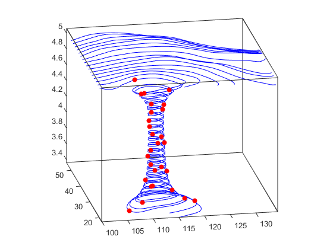

Create Stream Particle Animations
Projectile Path Over Time
This example shows how to display the path of a projectile as a function of time using a three-dimensional quiver plot.
Show the path of the following projectile using constants for velocity and acceleration, vz and a. Calculate z as the height as time varies from 0 to 1.
vz = 10; % velocity constant a = -32; % acceleration constant t = 0:.1:1; z = vz*t + 1/2*a*t.^2;
Calculate the position in the x-direction and y-direction.
vx = 2; x = vx*t; vy = 3; y = vy*t;
Compute the components of the velocity vectors and display the vectors using a 3-D quiver plot. Change the viewpoint of the axes to [70,18].
u = gradient(x); v = gradient(y); w = gradient(z); scale = 0; figure quiver3(x,y,z,u,v,w,scale) view([70,18])

What Particle Animations Can Show
A stream particle animation is useful for visualizing the flow direction and speed of a vector field. The “particles” (represented by any of the line markers) trace the flow along a particular stream line. The speed of each particle in the animation is proportional to the magnitude of the vector field at any given point along the stream line.
1. Specify Starting Points of the Data Range
This example determines the region of the volume to plot by specifying the appropriate starting points. In this case, the stream plots begin at x = 100 and y spans 20 to 50 in the z = 5 plane, which is not the full volume bounds.
load wind [sx sy sz] = meshgrid(100,20:2:50,5);
2. Create Stream Lines to Indicate Particle Paths
This example uses stream lines (stream3, streamline) to trace the path of
the animated particles, which adds a visual context for the animation.
verts = stream3(x,y,z,u,v,w,sx,sy,sz); sl = streamline(verts);
3. Define the View
While all the stream lines start in the z = 5 plane, the values of some spiral down to lower values. The following settings provide a clear view of the animation:
The viewpoint (
view) selected shows both the plane containing most stream lines and the spiral.Selecting a data aspect ratio (
daspect) of[2 2 0.125]provides greater resolution in the z-direction to make the stream particles more easily visible in the spiral.Set the axes limits to match the data limits (
axis) and draw the axis box (box).view(-10.5,18) daspect([2 2 0.125]) axis tight; set(gca,'BoxStyle','full','Box','on')
4. Calculate the Stream Particle Vertices
Determine the vertices along the stream line where a particle will be drawn. The
interpstreamspeed function returns
this data based on the stream line vertices and the speed of the vector data. This
example scales the velocities by 0.05 to increase the number of interpolated
vertices.
The streamparticles function sets the following
properties:
Animateto10to run the animation 10 times.ParticleAlignmenttoonto start all particle traces together.MarkerEdgeColortononeto draw only the face of the circular marker. Animations usually run faster when marker edges are not drawn.MarkerFaceColortored.Markertoo, which draws a circular marker. You can use other line markers as well.iverts = interpstreamspeed(x,y,z,u,v,w,verts,0.01); streamparticles(iverts,15,... 'Animate',10,... 'ParticleAlignment','on');
